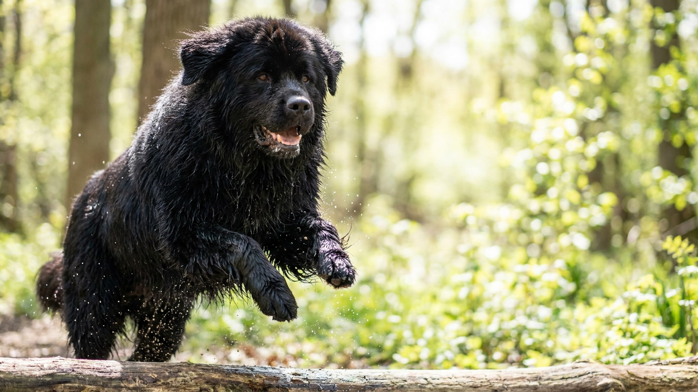

Взрослый ньюфаундленд весит 60–70 кг и рождён вытаскивать людей из воды — перепонки между пальцами и жирная водоотталкивающая шерсть не оставляют сомнений в его призвании. Но та же густая «шуба» делает его беззащитным перед летней жарой, а мягкий характер — перед долгим одиночеством. Разбираем, кому по силам эта порода, как беречь её в жару и почему нельзя брить.
🐾 Питомец ведёт себя странно?
AnimaLife расшифрует поведение кошки и собаки и подскажет, что делать. Попробуйте бесплатно прямо в мессенджере.
Ньюфаундленд выведен на одноимённом острове у берегов Канады, где помогал рыбакам: таскал сети, вытаскивал упавших за борт, работал в ледяной воде. Отсюда и его «водолазный» набор — перепончатые лапы для мощного гребка, плотный подшёрсток, который не пропускает холод, и жир на волосе, отталкивающий воду.
Эта же анатомия объясняет характер. Собаке, чья работа — спасать, генетически заложена мягкость и ориентация на человека. Ньюфаундленд почти не бывает агрессивным: сторож из него никакой, зато няня — отличная.
Ньюфаундленда веками звали «собакой-няней» — он спокойно и терпеливо относится к детям, редко раздражается, не склонен доминировать. Это семейная собака до кончика хвоста: ей нужно быть рядом с людьми, а не жить во дворе на цепи.
Двойная шерсть ньюфаундленда требует вычёсывания 2–3 раза в неделю, а в период линьки — чаще. Шерсть нельзя брить: подшёрсток защищает не только от холода, но и от перегрева и солнца, а после машинки часто отрастает неровно и хуже выполняет свою функцию.
Главный риск породы — лето. Густая «шуба» и крупное тело плохо отдают тепло, поэтому в жару ньюфаундленду нужны тень, постоянный доступ к прохладной воде и прогулки рано утром и поздно вечером. Признаки перегрева (тяжёлое частое дыхание, вялость, отказ двигаться) — повод немедленно увести собаку в прохладу и связаться с ветеринаром. Ещё одна бытовая деталь — обильное слюнотечение: с ним просто придётся смириться.
Это собака для тех, у кого есть место, время и спокойный ритм жизни. Ей не нужны марафоны, но нужны регулярные неспешные прогулки, бассейн или водоём летом и хозяин, который дома, а не пропадает на работе сутками. Крупные породы взрослеют и стареют по-своему, поэтому режим нагрузок, вес и рацион щенка-гиганта стоит заранее обсудить с ветеринаром — суставы и связки формируются долго.
Если вы готовы к шерсти по всей квартире, слюням на стенах и большому доброму «медведю», который ходит за вами из комнаты в комнату, — ньюфаундленд отблагодарит преданностью, которой хватит на всю семью.
🐾 Здоровье питомца под контролем
AI-ветеринар, дневник здоровья и персональные советы для вашего питомца — установите AnimaLife бесплатно.
🐾 Понравился разбор?
Подпишитесь на канал — каждый день разбираем по одному тревожному симптому у кошек и собак: что в пределах нормы, а когда пора к врачу. Подпишитесь, чтобы не пропустить разбор, который может спасти здоровье вашего питомца.
Материал носит информационный характер и не заменяет очную консультацию ветеринара.